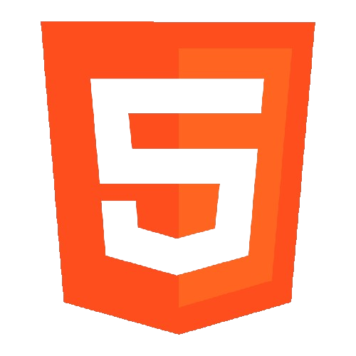
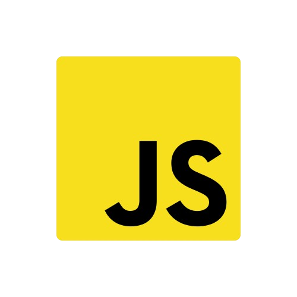
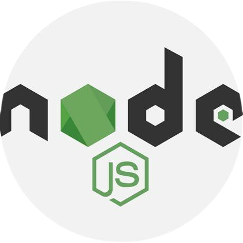
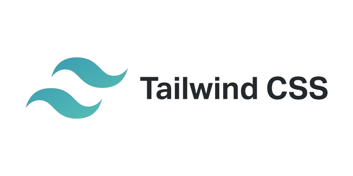
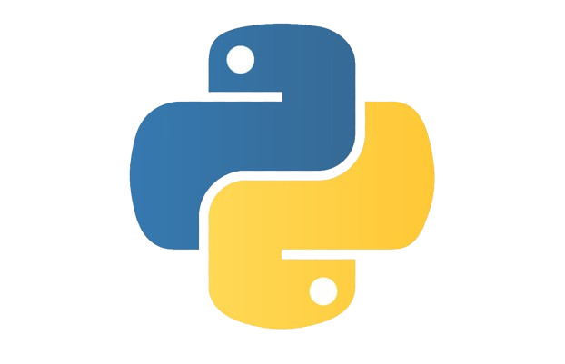

"Soy Jeremías Monserrat, un desarrollador Full Stack especializado en Front End. Con mi experiencia, elevo tu negocio/marca a nuevas alturas en la red."
¡Hola! Soy Jeremías, oriundo de Totoras, Santa Fe, Argentina. Con apenas 20 años, mi pasión por el mundo de la tecnología de la información me impulsa a crecer cada día.
Mi fascinación por este campo comenzó a fines de 2021, cuando decidí comenzar a estudiar a través de recursos en línea como YouTube y diversas plataformas educativas. A principios de 2022, di el salto a cursos más estructurados y actualmente me encuentro en el segundo año de la carrera de Técnico Superior en Desarrollo de Software.
Mi aprendizaje autodidacta ha sido fundamental en mi trayectoria. Al sumergirme en el desarrollo web, mi área de especialización, he adquirido un vasto conocimiento que ha sido impulsado por mi dedicación y curiosidad insaciable.
Como desarrollador web profesional, mi compromiso es crear experiencias digitales excepcionales que superen tus expectativas. Con un enfoque especializado en tecnologías de vanguardia, tengo la capacidad de llevar tu visión desde la concepción hasta la realidad con un diseño impecable y un rendimiento óptimo.
Mi experiencia se centra en una selección cuidadosamente elegida de tecnologías líderes en la industria, lo
que me permite ofrecerte soluciones web de alta calidad y completamente personalizadas. Entre las tecnologías
que domino se encuentran:
HTML
,CSS/SASS/TAILWIND,
JAVASCRIPT,
REACT,
NODE.JS,
PYTHON
Con un enfoque meticuloso en la calidad y la atención al detalle, estoy dedicado a superar tus expectativas y brindarte soluciones web que no solo cumplan, sino que también superen tus objetivos comerciales y de experiencia del usuario.
Empecemos por
monserratjere@gmail.com